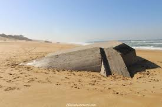

Labenne (en occitano La Vena) es una población y comuna francesa, situada en la región de Aquitania,
departamento de Landas, en el distrito de Dax y cantón de Saint-Vincent-de-Tyrosse .
El pequeño balneario de Labenne Océan se encuentra al oeste del pueblo al orillas del Océano Atlántico, en la Costa de Plata .
Limita al norte con Capbreton y Bénesse-Maremne, al este con Orx y Saint-André-de-Seignanx, al sur con Ondres y Saint-Martin-de-Seignanx
y al oeste con el océano Atlántico. Juntos con estas comunas, forman la communauté de communes de Maremne-Adour-Côte-Sud (la MACS).